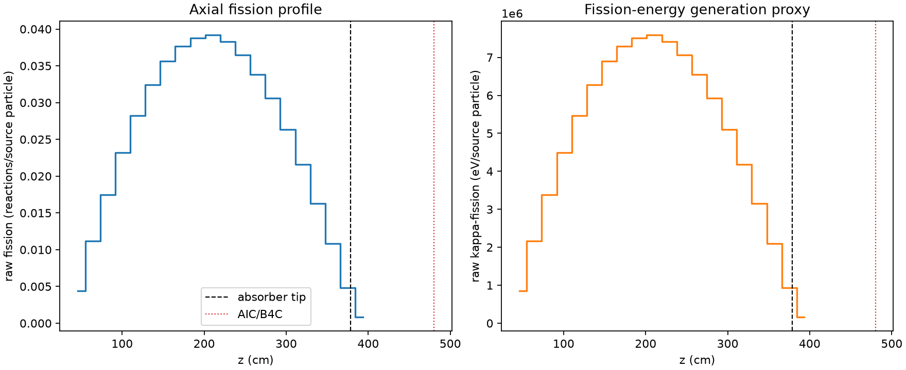
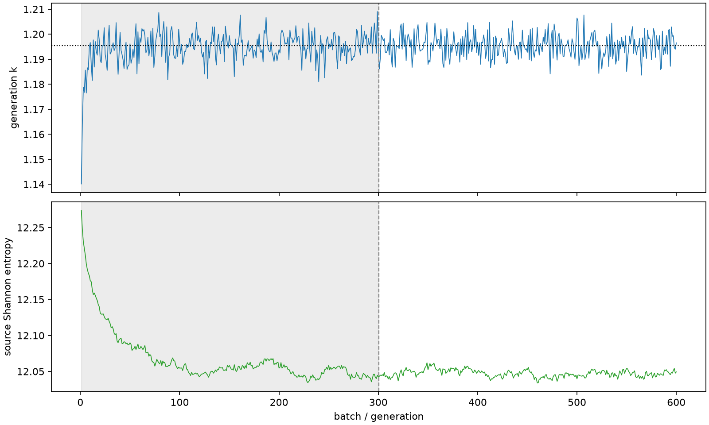

| field | value |
|---|---|
| experiment | V2-STAGE_128_OGRENCI_02-0003 |
| k | 1.195445935549373 |
| MC standard error | 0.00017804966757607485 |
| seconds | 1180.137868015 |
| acceptance | not_assessed |
| convergence | review_required |
Completed is output integrity only; physical and statistical review required. Zero tallies do not prove zero production or zero uncertainty.
| diagnostic | value |
|---|---|
| geometric fuel voxels | 5280 |
| zero fission tally voxels | 0 |
| low signal fuel voxels | 0 |
| low signal fission share | 0.0 |
| low signal kappa share | 0.0 |
| important fission share | 0.9500770813605772 |
| previous filter included | 5280 |
| duration estimate s | 1562.5173488400023 |
| actual minus estimate s | -382.37948082500225 |
| fission relative MC error | statistics |
|---|---|
| all_geometric_fuel | {"voxels": 5280, "positive_mean_voxels": 5280, "zero_mean_voxels": 0, "undefined_relative_error_voxels": 0, "median": 0.010409462709472645, "p95": 0.03367258399669762, "maximum": 0.0671137563749157} |
| low_signal | {"voxels": 0, "positive_mean_voxels": 0, "zero_mean_voxels": 0, "undefined_relative_error_voxels": 0, "median": null, "p95": null, "maximum": null} |
| important_95pct | {"voxels": 4138, "positive_mean_voxels": 4138, "zero_mean_voxels": 0, "undefined_relative_error_voxels": 0, "median": 0.009637159243753314, "p95": 0.01450083761320611, "maximum": 0.017474517463511367} |
| outside_previous_filter | {"voxels": 0, "positive_mean_voxels": 0, "zero_mean_voxels": 0, "undefined_relative_error_voxels": 0, "median": null, "p95": null, "maximum": null} |
| kappa_fission relative MC error | statistics |
|---|---|
| all_geometric_fuel | {"voxels": 5280, "positive_mean_voxels": 5280, "zero_mean_voxels": 0, "undefined_relative_error_voxels": 0, "median": 0.010398189297554178, "p95": 0.033630436235513664, "maximum": 0.06701558431117983} |
| low_signal | {"voxels": 0, "positive_mean_voxels": 0, "zero_mean_voxels": 0, "undefined_relative_error_voxels": 0, "median": null, "p95": null, "maximum": null} |
| important_95pct | {"voxels": 4138, "positive_mean_voxels": 4138, "zero_mean_voxels": 0, "undefined_relative_error_voxels": 0, "median": 0.009626468524289802, "p95": 0.014484008830779141, "maximum": 0.017455215809550593} |
| outside_previous_filter | {"voxels": 0, "positive_mean_voxels": 0, "zero_mean_voxels": 0, "undefined_relative_error_voxels": 0, "median": null, "p95": null, "maximum": null} |
| axial bin | fission share | kappa-fission share |
|---|---|---|
| 1 | 0.009004738135959471 | 0.009005141343539542 |
| 2 | 0.02284005210293487 | 0.022840103096619567 |
| 3 | 0.03577525099928951 | 0.035775146387172545 |
| 4 | 0.047519848218900665 | 0.04751982803473231 |
| 5 | 0.05778280861797545 | 0.05778282396895678 |
| 6 | 0.06638137543334931 | 0.06638122078135686 |
| 7 | 0.07298130746590618 | 0.07298103056260336 |
| 8 | 0.07717432922223065 | 0.07717395131199108 |
| 9 | 0.0794294554787864 | 0.07942929931374451 |
| 10 | 0.08027255370268899 | 0.08027227993014206 |
| 11 | 0.07848156468253907 | 0.07848165295576451 |
| 12 | 0.07475214665228976 | 0.074751828138124 |
| 13 | 0.06930517373276347 | 0.06930520195189087 |
| 14 | 0.06275275730910004 | 0.06275252119473886 |
| 15 | 0.05401323736081042 | 0.05401336929221134 |
| 16 | 0.04423971861472788 | 0.04423961478712492 |
| 17 | 0.03342272045442262 | 0.03342273860326836 |
| 18 | 0.022209319196239533 | 0.022209331331050797 |
| 19 | 0.009932845431310745 | 0.009933399391298002 |
| 20 | 0.0017287971877750204 | 0.0017295176236697316 |
Histories include the inactive-to-active transition at batch 300. kappa-fission approximates fission energy production, not total heat deposition.

